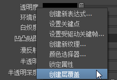

注： 提供的
新渲染设置系统现已取代传统渲染层，是 Maya 中的
默认系统。这种新方法可简化复杂场景的管理以便进行渲染，如今已成为建议的工作流。有关详细信息，请参见
Maya 渲染设置。
可以在每个层的基础上覆盖所有属性。有些类别的属性，尤其是那些应用于“着色组”(Shading Groups)和“成员覆盖”(Member Overrides)（“渲染统计信息”(Render Stats)）的属性，在变更时自动创建层覆盖。其他属性需要手动指定要进行的每个层覆盖。
在每个层的基础上更改对象的材质（自动覆盖）
- 在“渲染层编辑器”(Render Layer editor)中，选择一个层。
- 选择要更改材质指定的对象。
- 您可像指定任何新材质一样来指定新材质（例如，单击鼠标右键并从标记菜单中选择“指定新材质”(Assign New Material)）。设定材质的属性。
- 在选定层和任何其他层之间切换，并在“场景”视图中查看对象更改的材质指定。
注： 在处理时间方面，层覆盖花费的时间比每个对象覆盖要少。例如，如果选择层中的所有对象并通过在场景视图中指定 Lambert 着色器来覆盖每个对象的材质指定，则处理时间要比在指定 Lambert 着色器的层上创建材质覆盖多得多。
在每个层的基础上覆盖属性（自动覆盖）
- 在“渲染层编辑器”(Render Layer editor)中，选择一个层。
- 打开“属性编辑器”(Attribute editor)。
- 在对象形状节点的“渲染统计信息”(Render Stats)部分，单击一个选项（例如，“投射阴影”(Casts Shadows)）。
属性名称显示为橙色和粗体，表明已执行每个层覆盖。
启用“选项 > 自动覆盖”(Options > Auto Overrides)时，对“渲染统计信息”(Render Stats)属性所作的更改适用于选定层。如果禁用“选项 > 自动覆盖”(Options > Auto Overrides)，则属性更改适用于主层（因此，也适用于没有覆盖的所有对象）。如果禁用“成员覆盖”(Member Overrides)的“自动覆盖”(Auto Overrides)，可以进行手工覆盖。请参见下列步骤。
在每个层的基础上覆盖属性（手动覆盖）
- 在“渲染层编辑器”(Render Layer editor)中，选择一个层。
- 打开“属性编辑器”(Attribute editor)。
- 单击具有要覆盖属性的特定节点选项卡（例如，lambert1 材质）。
- 在要覆盖的属性（例如，“透明度”(Transparency)）上单击鼠标右键，然后从显示的菜单中选择“创建层覆盖”(Create Layer Override)。

属性的名称显示为斜体和橙色文本，表示它已经在特殊层上被覆盖。
如果在层之间切换，将会看到场景视图发生变化，显示了一个层中对象的透明覆盖和另一个层中的默认着色器指定。
若要删除属性覆盖
- 在要移除覆盖的属性上单击鼠标右键，然后从显示菜单中选择“移除层覆盖”(Remove Layer Override)。